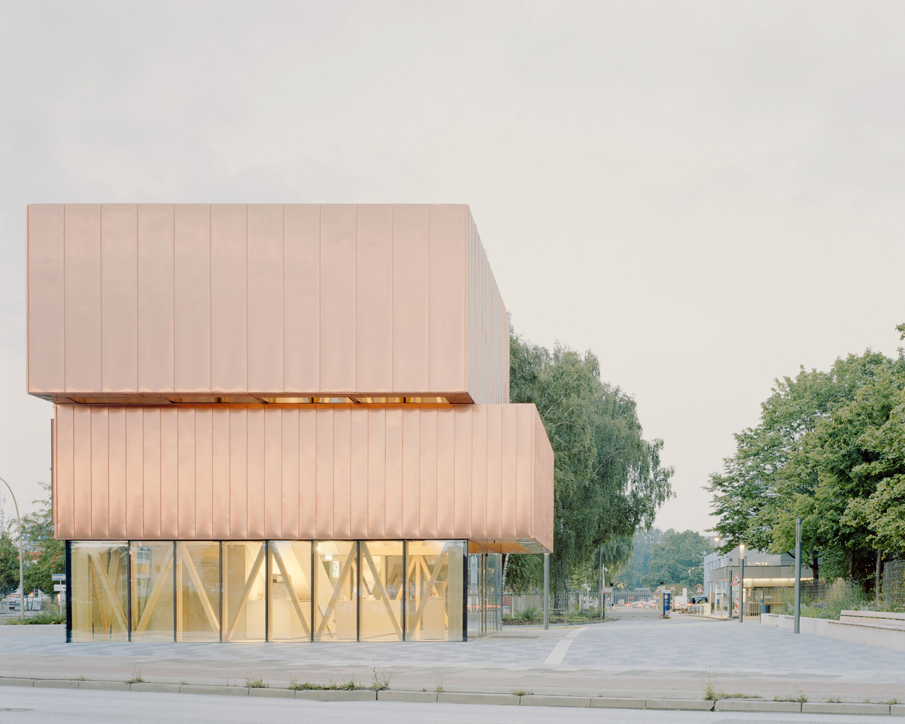
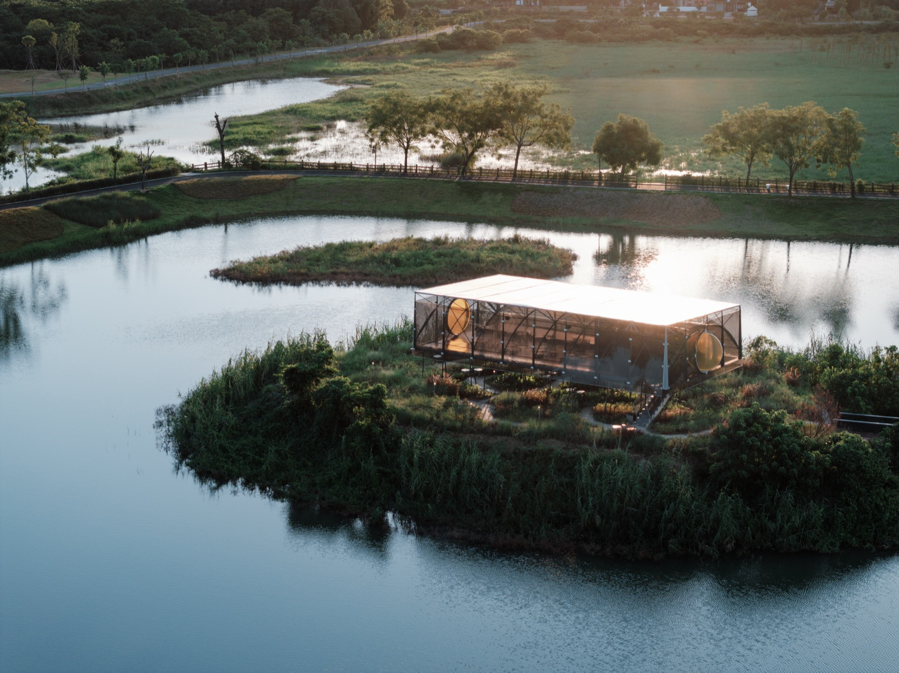
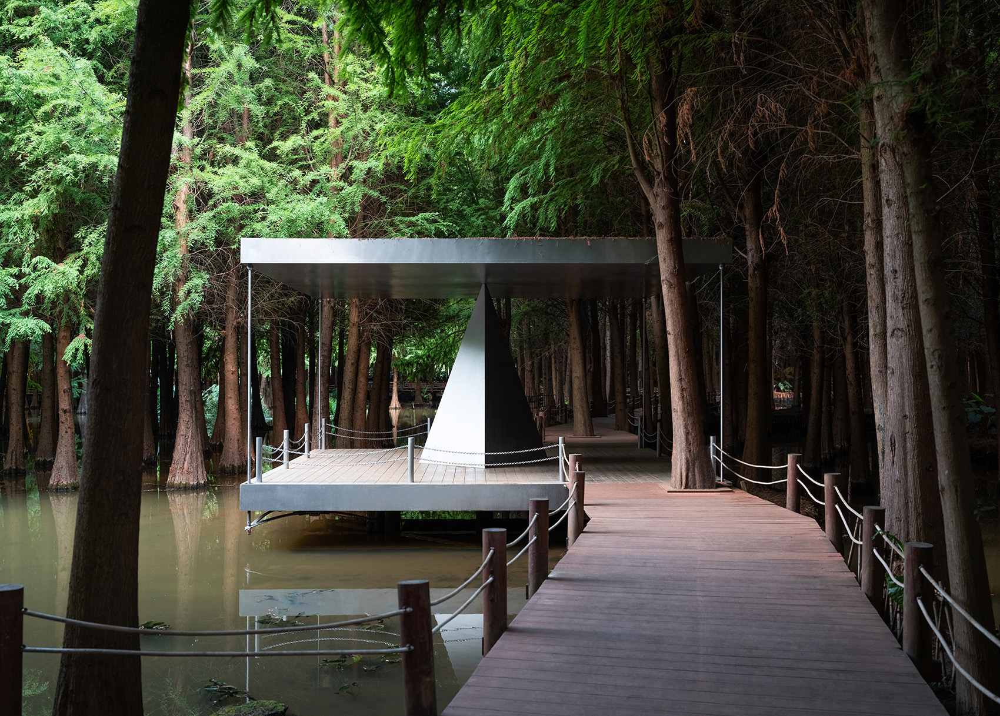
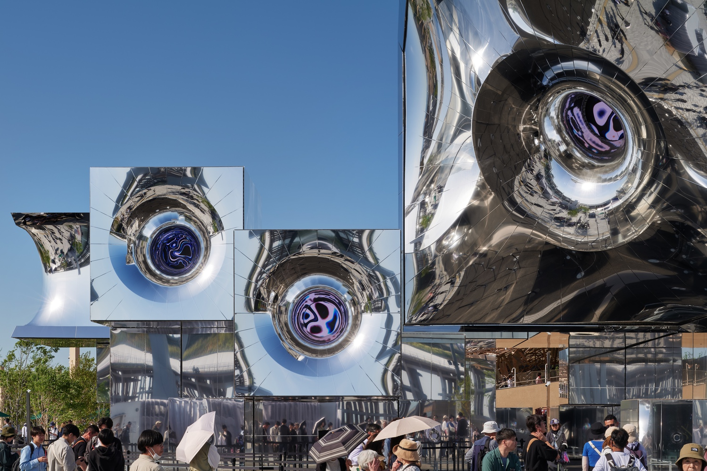
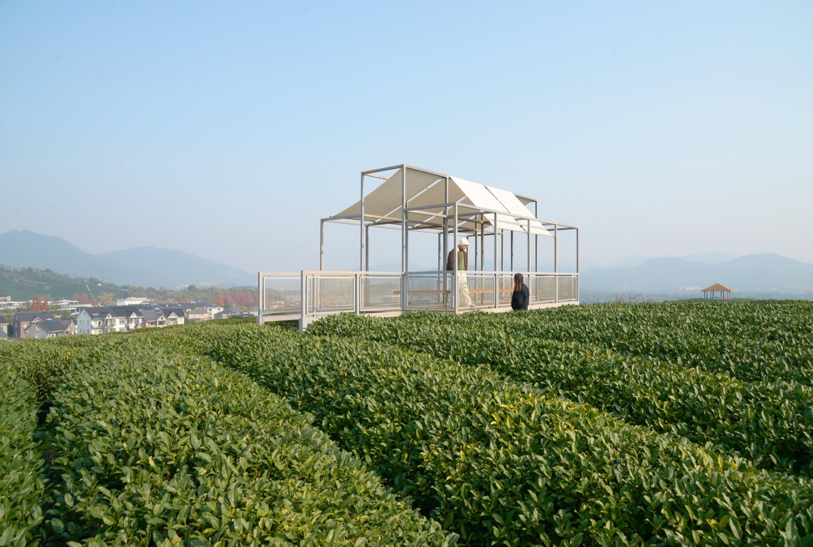
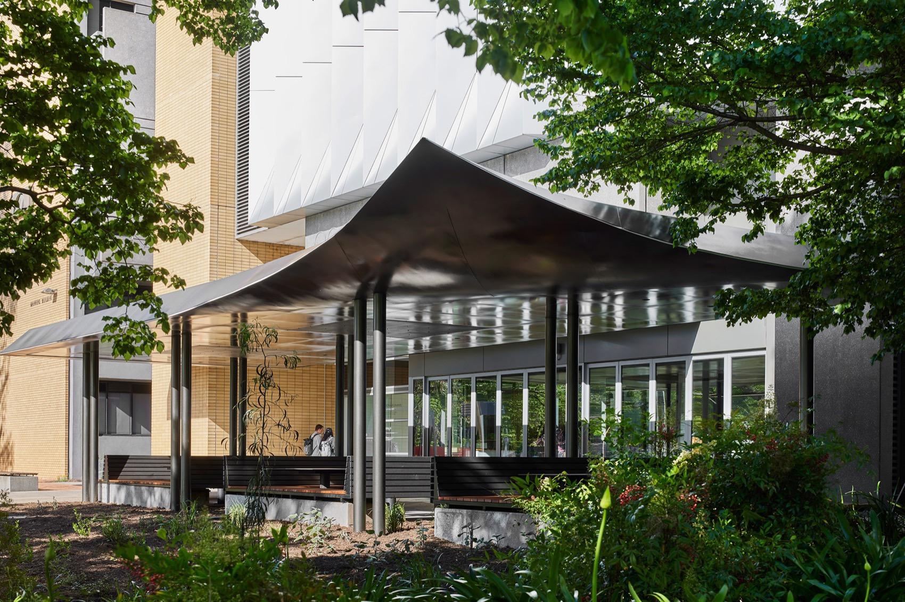
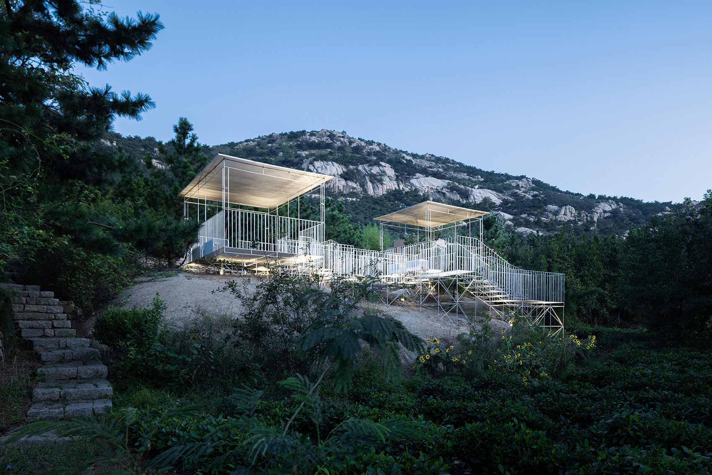
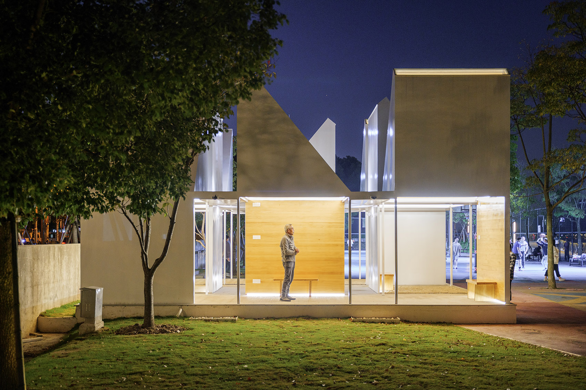
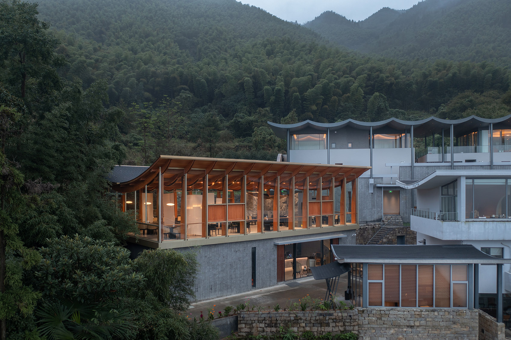

Reception Pavilion

Moon Pavilion

Three Pavilions of Laoyu River

Osaka Pavilion null²

A Floating Pavilion On A Tea Mountain

Monash University Pharmacy Pavilion

The Theater of Things

Hetu Luoshu Pavilion

Pavilion ∞